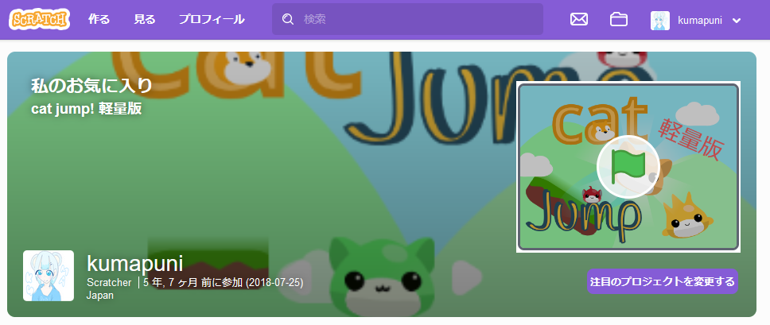

☰
自由気ままな個人サイトです 気が向いたら使ってるみたいな感じです。

Scratchでプログラミングやってます ぜひ見て行ってみてください！
デモで使用していた画像は、配布元の規約により同梱できません。 お使いになりたい場合は配布元から直接ダウンロードしてください。
ボタン色も、classにwhiteもしくはblackを与えることで 色をかえることができます。
くまぷに（のん）が気まぐれで作ったてきとーなサイトです。 特に有益なこともないかと思いますが、お付き合いいただければ幸いです。